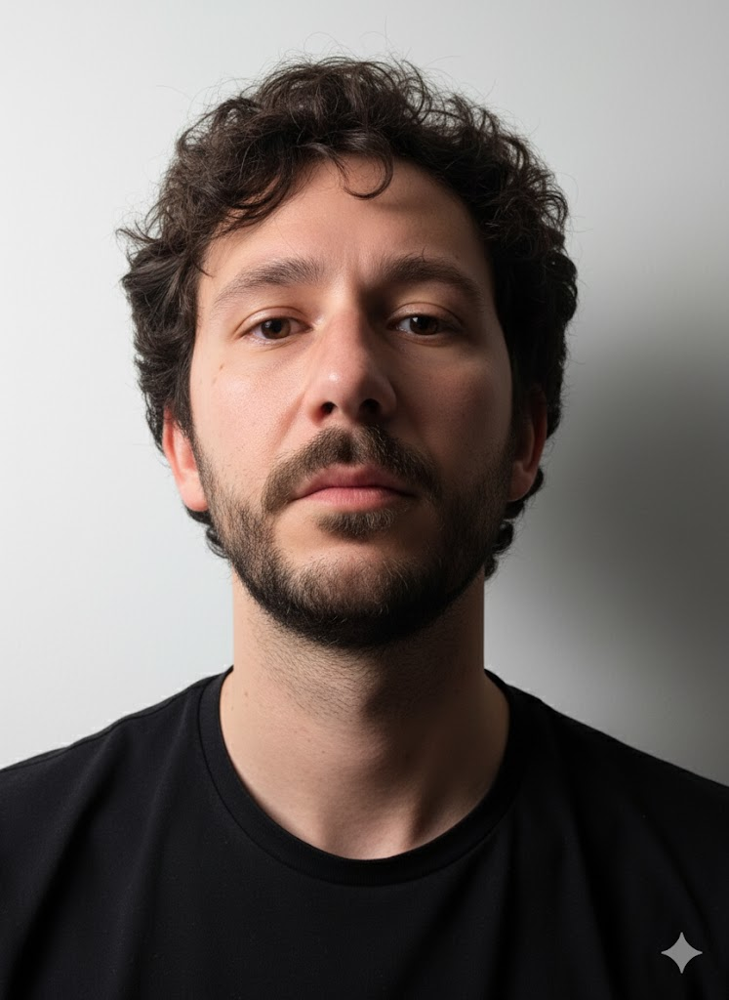
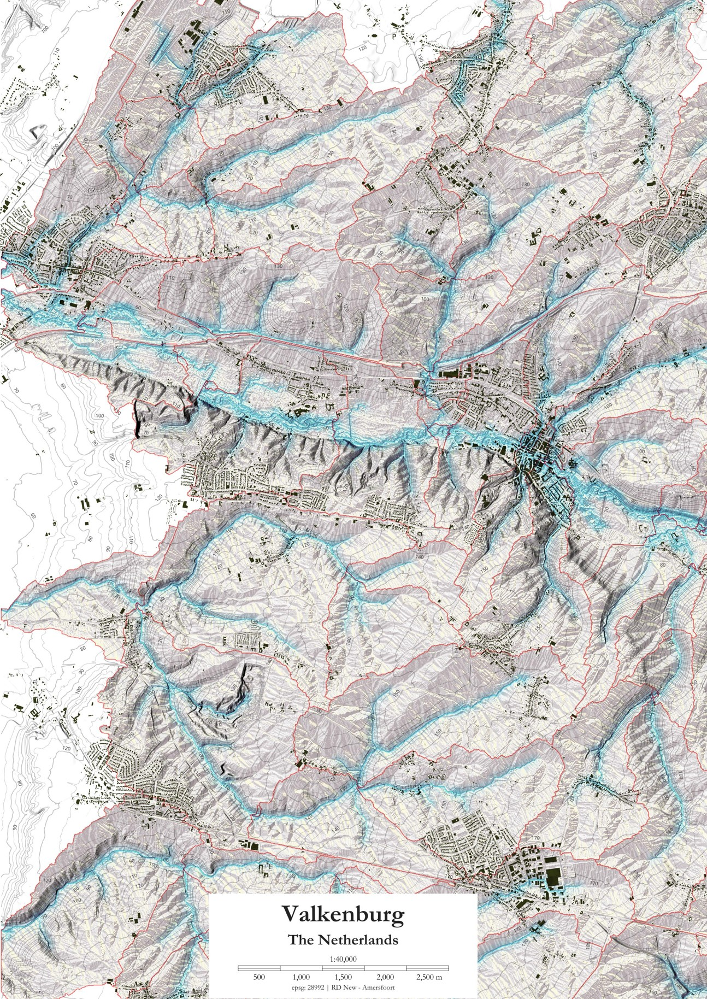

Daniele
CannatellaThe data revolution is not technical — it is mental. I use spatial data to help design cities that are just, livable, and deeply connected to landscape and nature.

Better data.
Braver cities.
Mapping where we are — so we can design where we need to go.

I am an Assistant Professor in Urban Data for Design at TU Delft, in the Section of Urban Data Science. My work starts from a conviction: the digital revolution gave us not just new tools, but a new kind of thinking. Tools that let us hold complexity — spatial scales from the yard to the planet, temporal scales from a human lifetime to a geological era — all at once.
Data are not neutral. They are political — generated by political will, reflecting it, and dictating it.
When I say I am interested in new cities, I mean cities that are just, livable, climate-proof, and in deep relation with nature and landscape — functionally and spiritually. Data can unlock this: by revealing spatial flows, enabling evidence-based adaptation strategies, and making planning processes faster, cheaper, and more democratic.
I am also a founding member of the Rbanism Community and coordinate the Spatial Data and GIS learning line in the MSc Urbanism programme at TU Delft. Lately I have been deeply curious about what AI means for how we teach and practice spatial design.
What I work on
All Research →Urban Resilience
Spatial modeling and risk assessment of how urban systems absorb, adapt to, and recover from climate-related stress.
Climate Adaptation
Landscape-based and nature-based strategies for urban adaptation — with quantitative spatial performance analysis across scales.
Spatial Data Science
Open, reproducible GIS and R-based workflows for urban analysis — making spatial evidence accessible, replicable, and scalable.